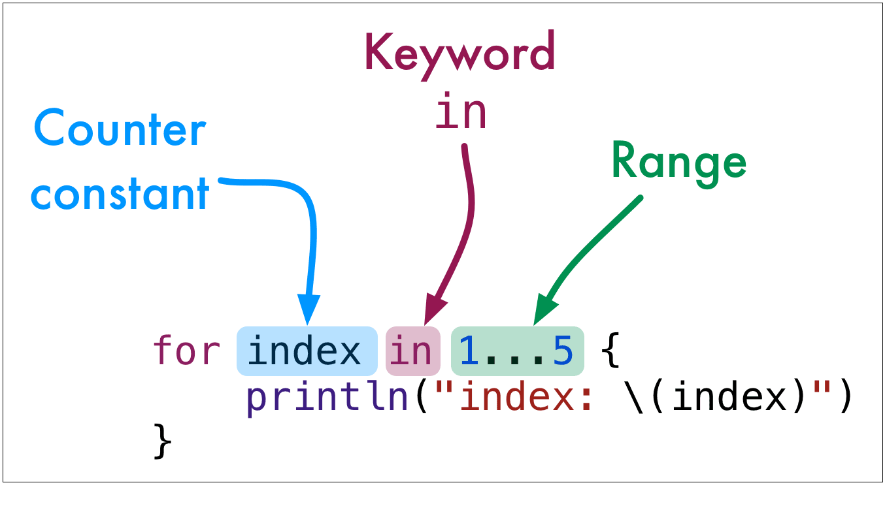

The Swift variation on this is the lack of parentheses. We still need to use this form once in a while when it's the only way to accomplish something. It will probably be pretty rare, though.
for-inThe for-in loop will be the main workhorse for looping in Swift. It has this form.
1 2 3 | for index in 1...5 {
println("index: \(index)")
}
|

Try this one too.